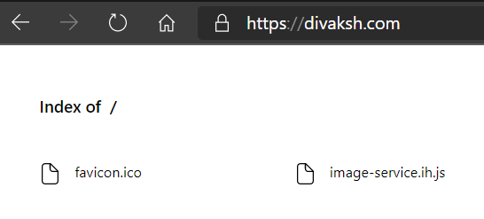

I have a CDN service from imghaste, a service worker based CDN. I have added their js file and imported it in the index.js but I’m getting the following error
ReferenceError: self is not defined
at eval (webpack-internal:///./packages/forgotten-developer/src/image-service.ih.js:1:1)
at Object../packages/forgotten-developer/src/image-service.ih.js (C:\dev\forgotten-developer\build\server.js:5020:1)
at __webpack_require__ (C:\dev\forgotten-developer\build\server.js:27:30)
at eval (webpack-internal:///./packages/forgotten-developer/src/index.js:2:75)
at Module../packages/forgotten-developer/src/index.js (C:\dev\forgotten-developer\build\server.js:5032:1)
at __webpack_require__ (C:\dev\forgotten-developer\build\server.js:27:30)
at eval (webpack-internal:///./build/bundling/entry-points/server.ts:3:87)
at Module../build/bundling/entry-points/server.ts (C:\dev\forgotten-developer\build\server.js:139:1)
at __webpack_require__ (C:\dev\forgotten-developer\build\server.js:27:30)
at C:\dev\forgotten-developer\build\server.js:104:18
Content of the image-service.ih.js file is
self.importScripts('https://cdn.imghaste.com/v1/cdn.divaksh.com/service-worker.js');
Expert guidance please!! Above CDN service worker deliver the right images based on the viewports.
HI @Divaksh
Can you please provide a repo or code-sandbox with your code? This is especially helpful to find solutions of technical issues with specific code
Detailing the info suggested here when having issues will help the community to provide the best possible help as quickly and as efficiently as possible.
1 Like
I’m so sorry for this, I’ll take of this from now onwards.  Here we go:
Here we go:
✓ Description of your issue
Service worker based CDN are not working with Frontity
✓ System info → npx frontity info
## System:
- OS: Windows 10 10.0.19041
- CPU: (6) x64 AMD FX(tm)-6300 Six-Core Processor
- Memory: 9.42 GB / 15.95 GB
## Binaries:
- Node: 14.13.0 - C:\Program Files\nodejs\node.EXE
- npm: 6.14.8 - C:\Program Files\nodejs\npm.CMD
## Browsers:
- Chrome: 85.0.4183.121
- Edge: Spartan (44.19041.423.0), Chromium (85.0.564.68), ChromiumDev (87.0.654.0)
- Internet Explorer: 11.0.19041.1
## npmPackages:
- @frontity/core: ^1.9.0 => 1.9.0
- @frontity/head-tags: ^1.0.7 => 1.0.7
- @frontity/html2react: ^1.4.0 => 1.4.0
- @frontity/tiny-router: ^1.2.1 => 1.2.1
- @frontity/wp-source: ^1.9.0 => 1.9.0
- forgotten-developer: file:packages/forgotten-developer => 1.0.0
- frontity: ^1.12.0 => 1.12.0
- react-icons: ^3.11.0 => 3.11.0
- yarn: ^1.22.10 => 1.22.10
## npmGlobalPackages:
- frontity: Not Found
- npx: Not Found
✓ Specific errors you’re getting in the terminal
SERVER STARTED – Listening @ http://localhost:3000
- mode: development
- target: module
- public-path: /static/
webpack built client e82bda0f945f9d9267da in 9927ms
i ｢wdm｣: Child client:
Asset Size Chunks Chunk Names
divakshcom.module.js 8.71 MiB divakshcom [emitted] divakshcom
+ 1 hidden asset
Child server:
Asset Size Chunks Chunk Names
server.js 11.1 MiB main [emitted] main
i ｢wdm｣: Compiled successfully.
ReferenceError: self is not defined
at eval (webpack-internal:///./packages/forgotten-developer/src/image-service.ih.js:1:1)
at Object../packages/forgotten-developer/src/image-service.ih.js (C:\dev\forgotten-developer\build\server.js:5044:1)
at __webpack_require__ (C:\dev\forgotten-developer\build\server.js:27:30)
at eval (webpack-internal:///./packages/forgotten-developer/src/index.js:2:75)
at Module../packages/forgotten-developer/src/index.js (C:\dev\forgotten-developer\build\server.js:5056:1)
at __webpack_require__ (C:\dev\forgotten-developer\build\server.js:27:30)
at eval (webpack-internal:///./build/bundling/entry-points/server.ts:3:87)
at Module../build/bundling/entry-points/server.ts (C:\dev\forgotten-developer\build\server.js:139:1)
at __webpack_require__ (C:\dev\forgotten-developer\build\server.js:27:30)
at C:\dev\forgotten-developer\build\server.js:104:18
✓ Specific errors you’re getting in the browser’s console
- Page is not getting opened
✓ A repository or codesandbox with the code of your project
- https://github.com/Divaksh/forgotten-developer/tree/dev
✓ A deployed version of your site
prod divaksh.com
dev https://forgotten-developer-3j3l74ztg.vercel.app/
✓ The URL of your WP REST API
- api.divaksh.com/wp-json
✓ Additional information: Setup guide from the CDN service provider
Hi @Divaksh 
Your issue is that frontity by default serves the static assets under /static/ path: https://docs.frontity.org/frontity-cli/build-commands#the-publicpath-option
I see that this CDN that you’re using requires that the file is hosted at the root of your server, so you have 2 options:
-
Run frontity with (yes, this is just a slash at the end):
npx frontity dev --public--path /
Keep in mind that this will affect how all your other static files are served. When you build your app for production you will likewise have to run npx frontity bulid --public--path /.
-
You can try to see if imghaste allows you to customize the path from Step 2. of the setup instructions so that their SDK will look for https://api.divaksh.com/static/image-service.ih.js (note the added “static”
Hope this helps!
2 Likes
Interesting!! Seems, it has nothing to do with Frontity if they need image-service.ih.js to get delivered from https://api.divaksh.com because it is a different server where my actual WordPress is hosted. Main domain is divaksh.com that is hosted on Vercel. Let me experiment and discuss it further with the CDN provider. Will keep this post updated.
1 Like
Yes, for security reasons you have to serve the service worker from your domain (the Frontity one).
I think you are trying to add the Service Worker code to the Frontity app. That’s not how it works. Service Workers are separate files. You need to create a separate image-service.ih.js file and serve it as it is.
You can serve files in Vercel by using this vercel.json instead of @frontity/now:
{
"version": 2,
"builds": [
{
"src": "build/static/**/*",
"use": "@now/static"
},
{
"src": "favicon.ico",
"use": "@now/static"
},
{
"src": "image-service.ih.js",
"use": "@now/static"
},
{
"src": "build/server.js",
"use": "@now/node"
}
],
"routes": [
{
"src": "/static/(.*)",
"headers": {
"cache-control": "max-age=31536000,s-maxage=31536000,immutable"
},
"dest": "/build/static/$1"
},
{ "src": "/favicon.ico", "dest": "/favicon.ico" },
{ "src": "/image-service.ih.js", "dest": "/image-service.ih.js" },
{
"src": "/(.*)",
"headers": { "cache-control": "s-maxage=1,stale-while-revalidate" },
"dest": "/build/server.js"
}
]
}
But if you do this, you have to run npx frontity build before running npx vercel (our @frontity/now package runs the Frontity build in the cloud).
2 Likes
Earlier before creating this post I also tried creating separate image-service.ih.js, but divaksh.com/image-service.ih.js wasn’t accessible, it was throwing internal server error. So, the vercel.json caused it? I’ll do it again and this time with updated vercel.json as suggested and update here on weekend.
Thank you, man, it worked. How to use GitHub Vercel automatic deployment pipeline with it? Earlier when I used to push changes, automatic deployment used to work fine but now, now it opens the directory listing page, like this

and for the same code manual deployment with npx vercel --prod works fine.
Here is my vercel.json commit and I have also tried with updating vercel.json with frontity/now.
{kind=link}